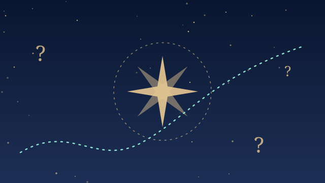
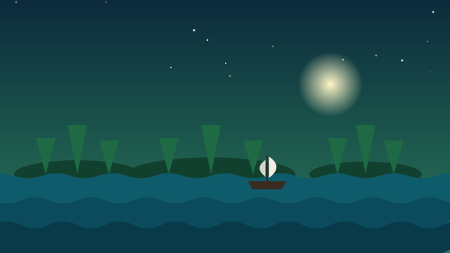
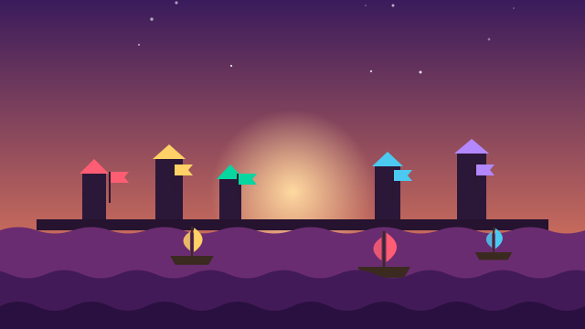
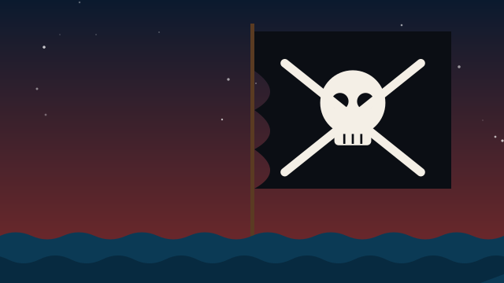
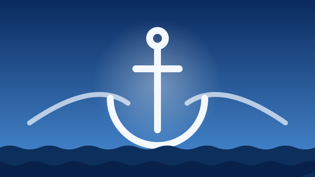
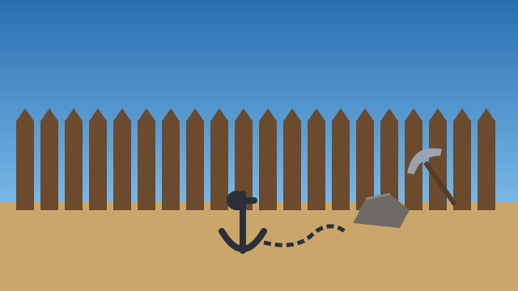
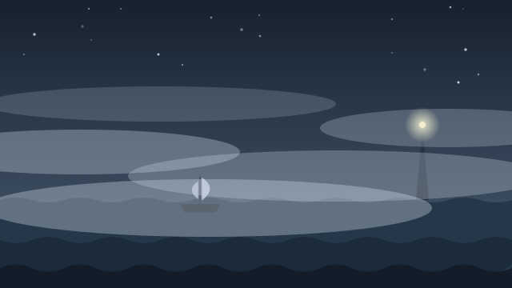

Date et ouvertureNon confirmé
Aucune date officielle de sortie. Les modalités d’ouverture de l’EAC et de la PAC peuvent changer.
ACCÈS
Où et comment jouer, ce que disent les sources sur les rangs Silver et Gold, les perks connus et la différence entre un rang d’abonnement et un palier d’équipement. Compilé à partir des textes déjà présents sur le site.
ENVIRONNEMENTS
Le récapitulatif du Q&A de septembre décrit deux environnements dans le même projet. Les modalités d’ouverture peuvent évoluer.

Environnement distinct prévu pour les essais à grande échelle. Le récapitulatif évoque un plafond de détention de fruits et des Marines qui traquent leurs détenteurs selon la « Doctrine of Power ».

L’expérience destinée au public. Les fruits y sont décrits comme rares, sans le plafond de détention ni la traque spécifique présentés pour l’EAC.

Des récapitulatifs de joueurs décrivent une ouverture par vagues, une progression distincte et un passage envisagé de l’EAC à la PAC. Rien d’officiel.
RANGS
Le Q&A cite les rangs Silver+ et Gold+ pour les tests EAC. Une ancienne capture des avantages indique que Gold reprend ceux de Silver.
| Rang | Ce que disent les sources | Certitude |
|---|---|---|
| Silver+ | Cité pour les tests EAC. Les avantages Silver incluraient l’accès CC · Seas (ancienne capture). | Ancienne capture |
| Gold+ | Cité pour les tests EAC. Reprend les avantages Silver, dont l’accès CC · Seas. | Ancienne capture |
| Durée des droits | Ce qui se passe après expiration et la prise en compte d’un ancien abonnement ne sont pas documentés. | Inconnu |
| Anciens abonnés sans rôle | Le récapitulatif conseille d’ouvrir un ticket d’abonnement. | Conseil rapporté |
Un mois de Gold suffit-il ? Non vérifié. Les conditions au moment de l’ouverture restent à confirmer dans le Discord RELL Games. Les conditions actuelles de Gold et Silver dépendent des annonces du serveur.
PERKS
Quatre sources de perks apparaissent dans les sources du site. Aucune valeur chiffrée n’est confirmée.

L’onglet Familiar du journal liste les crews avec leurs perks. Les 40 crews PNJ sont recensés dans le dossier des factions.

Les rangs montent via la réputation et les missions. L’Admiral accède à tout Hades Asylum par l’ascenseur, et l’appel d’un Buster Call est réservé au sommet.

Selon les guides communautaires, le personnage choisirait une affinité avec une classe d’arme qui donnerait un bonus d’expérience d’arme. Un bonus d’EXP n’est pas une hausse de dégâts.

Les traits viennent du Randomize ou d’une quête. Les bonus rapportés touchent les royaumes, l’XP et certaines classes d’armes. À vérifier.
PALIERS
Attention : « Gold » désigne ici un palier d’équipement (outils, serrures, boussole), sans rapport avec le rang d’abonnement Gold de l’accès anticipé.
| Équipement | Paliers | Métier |
|---|---|---|
| Pioche | Bronze, Silver, Gold, Leviathan | Minage |
| Hache | Bronze, Silver, Gold, Leviathan | Bûcheronnage |
| Pelle | Bronze, Silver, Gold, Leviathan, Stormstone, Summonance | Navigation |
| Boussole | Bronze, Silver, Gold | Navigation |
| Marteaux | Bronze, Silver, Gold, Leviathan, Stormstone Hammer | Artisanat |
| Serrures | Bronze, Silver, Gold, Leviathan | Vol |
| Crochets | Bronze, Silver, Gold, SeaStone, Sapphire, RubyGold | Vol |
À VÉRIFIER
Aucune date officielle de sortie. Les modalités d’ouverture de l’EAC et de la PAC peuvent changer.
Les captures d’avantages sont anciennes. Aucune durée ni condition de renouvellement n’est confirmée.
Le chiffre du plafond en EAC n’est pas donné dans les sources consultées.
Le journal liste des perks, mais le contenu complet de chaque crew reste à relever en jeu.